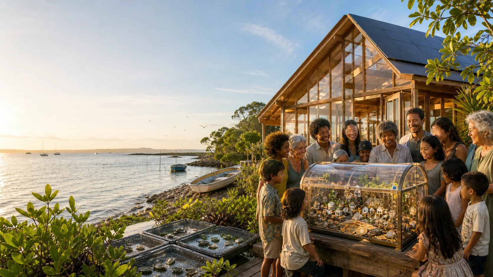

Fiat money
Fiat means normal government money, like Australian dollars. This is the everyday rail for wages, invoices, insurance, rent, repairs, grants, tax and public reporting.

Community sovereign wealth
A community wealth fund protects a shared base so today can be helped without stealing from tomorrow.
Plain English
For a country, a sovereign wealth fund is a public savings and investment fund. For a community, the same idea can be smaller and more local: a protected pot of shared wealth with clear rules, public reporting, and community authority.
Think of it like a mango tree. You do not chop the tree down every time someone wants fruit. You care for the tree, share the harvest, plant new trees, and keep enough shade for the next generation.
The spectrum
Money can go to urgent needs: repairs, food, transport, care, local jobs, safety, or cultural work. Powerful when the need is real, risky if it leaves nothing for the future.
Keep enough aside for storms, failed events, emergency travel, community equipment, or a sudden bill. This is the household emergency fund idea, scaled up.
The main capital can be protected, with only a careful amount of the earnings spent. This is slower, but it can serve children and grandchildren.
A community can own part of a project, building, energy system, media network, or land-care enterprise so benefits are not only one-off payments.
Braided fund rails
The simple version is three clear rails: ordinary money for ordinary bills, C-Hours for verified community contribution, and digital assets where people have chosen them with proper advice and safeguards. The design test is simple: can ordinary people see the win and understand the rules?
Fiat means normal government money, like Australian dollars. This is the everyday rail for wages, invoices, insurance, rent, repairs, grants, tax and public reporting.
A Community-Hour, or C-Hour, is a draft non-monetary receipt for one verified hour of useful contribution: care, repair, mentoring, disaster readiness, ecological work, training or civic service.
Crypto and other digital assets can sit in an informed opt-in rail. They may help with transparent wallets, programmable directions and escrow when the rules are lawful, understood and professionally governed.
Ledger and honour board
A public leaderboard can motivate people, but it can also become unfair or creepy if it is rushed. One careful starting point is a contribution ledger: what happened, who verified it, what project it helped, what can be corrected, and what stays private.
A safer C-Hour lane does not pretend to be wages, charity points, investment tokens or social credit. It is a proposed way to make invisible community work visible without turning every person into a product.
Digital asset caution
Plain meaning: software rules can release money for agreed purposes, such as reef care, insurance reserves, event safety or audited maintenance.
Plain meaning: a neutral holding place keeps funds aside until agreed conditions are met. It is like leaving the envelope with a trusted referee, not with either side of the deal.
Digital assets can trigger financial services, tax, custody, anti-scam and consumer-protection rules. This lane is safer when it is designed with qualified advice and community consent.
Guardrails
A community may want a real say before the money rules harden. Deep decisions about Country, culture, data or future wealth deserve more than a rushed meeting.
A fund is stronger with people who understand money, risk, reporting, law and conflict of interest. Love is warmer when the books are clean.
Public reporting can show what came in, what went out, what is protected, and who made each decision.
The Noongar Boodja Trust in Western Australia includes a Future Fund designed to grow over time. It is not a copy-and-paste model for Moreton Bay, but it shows how a long-term fund can be written into a Native Title settlement.
Mirning Green Energy Limited holds a minority shareholding in the proposed Western Green Energy Hub. That points to a different choice: not only royalties, but ownership and a board seat.